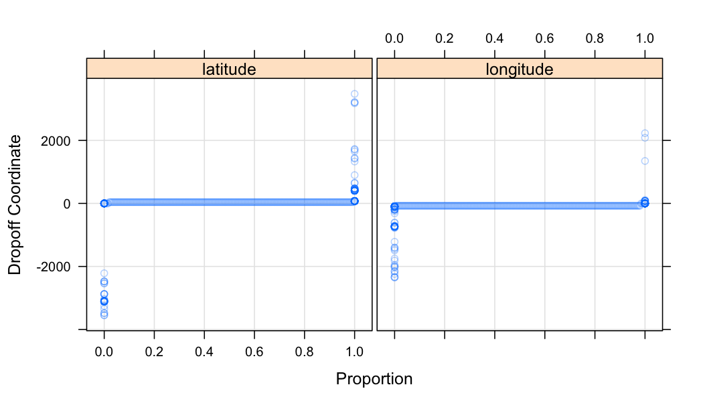

Background
This is a simple document outlining some initial exploratory analysis of the NYC taxi data.
Resources
- How the data was obtained - here
- Gawker article
- Visualizing a day for a random taxi
- [How medallion and hack licenses can be deanonymized - here and here
- Other open NYC data
- Wikipedia article on NYC taxis
Getting the data
Download
There are a few sources. I got it from here.
There are of course plenty of ways to get the data into shape. I chose whatever I could think of most quickly. There is probably an awk one-liner or more efficient way to do it, but it's not very much data and these steps didn't take long.
There are two sets of files - one for trip data and one for fare data. This site has them broken down into 12 files for each set.
In a bash shell, you can download and unzip the data with the following:
for i in {1..12}; do
echo "$i"
wget "https://nyctaxitrips.blob.core.windows.net/data/trip_data_$i.csv.zip"
wget "https://nyctaxitrips.blob.core.windows.net/data/trip_fare_$i.csv.zip"
done
for f in *.zip; do
echo "$f"
unzip $f
done
rm *.zip
It turns out the files have CRLF endings...
file *
# trip_data_1.csv: ASCII text, with CRLF line terminators
# trip_data_10.csv: ASCII text, with CRLF line terminators
No good. I converted them to unix format with dos2unix, which may not be installed on all linux flavors, but it's easy to install or there are other ways to deal with it.
for f in *.csv; do
echo "$f"
dos2unix $f
done
Looking at the files, it turns out that the number of lines match for each numbered trip and fare file. It would be nice to merge these, but we should make sure before merging that the rows match. Each record seems to be able to be uniquely defined by the medallion, hack_license, and pickup_datetime, which are present in both the trip and fare files. We can run a simple awk command to make sure each these match for each row.
# for i in {1..12}; do
# echo "$i"
# awk -F',' 'NR==FNR { a[$1,$2,$6]; next } ($1,$2,$4) in a { c++ } END { print c }' "trip_data_$i.csv" "trip_fare_$i.csv"
# done
The code is commented out because we have already verified this so no need to re-run unless you really want to. Everything matches, except some header lines have spaces and therefore don't match.
Merge trip and fare
Now let's merge the data/fare file pairs only using non-reduncant columns
for i in {1..12}; do
echo "$i"
paste -d, "trip_data_$i.csv" <(cut -d',' -f5-11 "trip_fare_$i.csv") > "trip_$i.csv"
done
This gives us 12 merged files: trip_1.csv, etc.
Finally, we can remove the original files.
rm trip_data*
rm trip_fare*
The final data is about 31GB.
Reading in to R
Reading in the raw data to R is as simple as calling drRead.csv(). However, some initial exploration revealed some transformations that would be good to first apply.
Initial transformations
The first transformation is simply that we want to parse the pickup and dropoff times as POSIXct.
Second, there are some very large outliers in the pickup and dropoff latitude and longitude that are not plausible and will hinder our analysis. We could deal with this later, but might as well take care of it up front.
For an idea of what the raw lat/lon data looks like, here are some quantile plots for the dropoff lat/lon, for example:

Note that these quantiles have been computed at intervals of 0, 0.005, 0.01, ..., 0.995, 1, so there are more outlying points than those shown in the plot.
According to this, the bounding box of NYC city limits is latitude=40.917577, longitude=-74.259090 at the northwest corner, and latitude=40.477399, longitude=-73.700272 at the southeast corner. So we have some very egregious outliers.
We will set any coordinates outside of this bounding box to NA in our initial transformation. We don't want to remove them altogether as they may contain other interesting information that may be valid.
We are just looking at the first csv file and using the "local disk" back end.
library(datadr)
library(parallel) # needed for multicore MapReduce
# set the default backend to be R multicore with 4 cores
options(defaultLocalDiskControl = localDiskControl(makeCluster(4)))
nw <- list(lat = 40.917577, lon = -74.259090)
se <- list(lat = 40.477399, lon = -73.700272)
trans <- function(x) {
# convert to POSIXct time
x$pickup_datetime <- fast_strptime(as.character(x$pickup_datetime), format = "%Y-%m-%d %H:%M:%S", tz = "EST")
x$dropoff_datetime <- fast_strptime(as.character(x$dropoff_datetime), format = "%Y-%m-%d %H:%M:%S", tz = "EST")
# set coordinates outside of NYC bounding box to NA
ind <- which(x$dropoff_longitude < nw$lon | x$dropoff_longitude > se$lon)
x$dropoff_longitude[ind] <- NA
ind <- which(x$pickup_longitude < nw$lon | x$pickup_longitude > se$lon)
x$pickup_longitude[ind] <- NA
ind <- which(x$dropoff_latitude < se$lat | x$dropoff_latitude > nw$lat)
x$dropoff_latitude[ind] <- NA
ind <- which(x$pickup_latitude < se$lat | x$pickup_latitude > nw$lat)
x$pickup_latitude[ind] <- NA
x
}
raw <- drRead.csv("data/raw_csv/trip_1.csv", rowsPerBlock = 300000,
postTransFn = trans, output = localDiskConn("data/raw"))
raw <- updateAttributes(raw)
Initial Exploration
Here are some simple quick summaries to help us start to get a feel for the data and where we might want to start taking a deeper look. There's a lot more to look at, this is just a quick start.
Here we make use of some of datadr's division-indpendent summary methods that operate over the entire data set and do not care about how it is divided.
Connecting to raw data
We can reconnect to the ddf we read in with the following:
raw <- ddf(localDiskConn("data/raw"))
raw
Distributed data frame backed by 'kvLocalDisk' connection
attribute | value
----------------+-----------------------------------------------------------
names | medallion(cha), hack_license(cha), and 19 more
nrow | 14776615
size (stored) | 844.42 MB
size (object) | 2.24 GB
# subsets | 50
* Other attributes: getKeys(), splitSizeDistn(), splitRowDistn(), summary()
We see that this ddf contains ~14.8 million taxi trips and is split into 50 arbitrary subsets.
Summaries
When we read in the data, since it is a ddf, summary statistics were computed for each variable:
summary(raw)
medallion
---------------------------------------
levels : 10000+
missing : 0
> freqTable head <
7E1346F23960CC18D7D129FA28B63A75 : 2137
6FFCF7A4F34BA44239636028E680E438 : 2112
A979CDA04CFB8BA3D3ACBA7E8D7F0661 : 2039
D5C7CD37EA4D372D00F0A681CDC93F11 : 1959
---------------------------------------
hack_license vendor_id
--------------------------------------- ------------------
levels : 10000+ levels : 2
missing : 0 missing : 0
> freqTable head < > freqTable head <
00B7691D86D96AEBD21DD9E138F90840 : 1933 CMT : 7450899
F49FD0D84449AE7F72F3BC492CD6C754 : 1616 VTS : 7325716
51C1BE97280A80EBFA8DAD34E1956CF6 : 1603
847349F8845A667D9AC7CDEDD1C873CB : 1570
--------------------------------------- ------------------
rate_code store_and_fwd_flag pickup_datetime
-------------------- ------------------ ------------------------
missing : 0 levels : 3 missing : 0
min : 0 missing : 0 min : 12-12-31 16:00
max : 210 > freqTable head < max : 13-01-31 15:59
mean : 1.034273 : 7326207
std dev : 0.3387715 N : 7285231
skewness : 195.5337 Y : 165177
kurtosis : 113263.8
-------------------- ------------------ ------------------------
dropoff_datetime passenger_count trip_time_in_secs
------------------------ ------------------- -------------------
missing : 0 missing : 0 missing : 0
min : 12-12-31 16:00 min : 0 min : 0
max : 13-02-01 02:33 max : 255 max : 10800
mean : 1.697372 mean : 683.4236
std dev : 1.365396 std dev : 494.4063
skewness : 2.681262 skewness : 2.27493
kurtosis : 121.2664 kurtosis : 13.97751
------------------------ ------------------- -------------------
trip_distance pickup_longitude pickup_latitude
------------------- --------------------- ---------------------
missing : 0 missing : 271114 missing : 267926
min : 0 min : -74.25858 min : 40.47757
max : 100 max : -73.70029 max : 40.91757
mean : 2.770976 mean : -73.97533 mean : 40.75106
std dev : 3.305923 std dev : 0.03428528 std dev : 0.02674132
skewness : 3.836538 skewness : 3.407925 skewness : -0.9979193
kurtosis : 32.05707 kurtosis : 18.54463 kurtosis : 6.431953
------------------- --------------------- ---------------------
dropoff_longitude dropoff_latitude payment_type
--------------------- --------------------- ------------------
missing : 282583 missing : 278369 levels : 5
min : -74.2589 min : 40.47763 missing : 0
max : -73.70029 max : 40.91752 > freqTable head <
mean : -73.97497 mean : 40.75154 CRD : 7743844
std dev : 0.03235445 std dev : 0.03000986 CSH : 6982383
skewness : 2.510542 skewness : -0.5599866 NOC : 32783
kurtosis : 18.01025 kurtosis : 6.503353 DIS : 11171
--------------------- --------------------- ------------------
fare_amount surcharge mta_tax
------------------- -------------------- ---------------------
missing : 0 missing : 0 missing : 0
min : 2.5 min : 0 min : 0
max : 500 max : 12.5 max : 0.5
mean : 11.66472 mean : 0.3204904 mean : 0.498397
std dev : 9.639219 std dev : 0.3675741 std dev : 0.02826541
skewness : 4.072831 skewness : 0.6875023 skewness : -17.57604
kurtosis : 51.30727 kurtosis : 2.39267 kurtosis : 309.9172
------------------- -------------------- ---------------------
tip_amount tolls_amount total_amount
------------------- ------------------- -------------------
missing : 0 missing : 0 missing : 0
min : 0 min : 0 min : 2.5
max : 200 max : 20 max : 650
mean : 1.267509 mean : 0.201867 mean : 13.95298
std dev : 2.046084 std dev : 1.035481 std dev : 11.46469
skewness : 6.081281 skewness : 5.859475 skewness : 3.887555
kurtosis : 180.7268 kurtosis : 46.02757 kurtosis : 39.25815
------------------- ------------------- -------------------
This gives us some initial interesting insight. This data pretty much spans January 2013, credit card and cash are used nearly in equal proportion, the average total fare is $13.95, etc.
Let's visualize some of these summaries. Looking at medallion and hack_license, we see that it says there are "10000+" levels. The ddf summary method has a cutoff for how many unique levels of a variable to tabulate (to avoid tail cases where there might be millions of unique values). In this case, the top 5000 and bottom 5000 medallions and hack licenses are reported.
We can plot the distribution of these by extracting them from the summaries.
# medallion frequency table
mft <- summary(raw)$medallion$freqTable
plot(sort(mft$Freq),
ylab = "Medallion frequency (top/bottom 5000)")
abline(v = 5000, lty = 2, col = "gray")
This is an interesting distribution - many mediallions were hardly used, while some were used over 2000 times (~65x per day).
# hack_license frequency table
hft <- summary(raw)$hack_license$freqTable
plot(sort(hft$Freq),
ylab = "Hack frequency (top/bottom 5000)")
abline(v = 5000, lty = 2, col = "gray")

This is also interesting. Some hacks have driven over 1500 trips - some up to an average of over 50 trips a day, while we know the bottom 5000 of the hacks were involved in 125 or fewer trips (~4 trips or less per day).
Quantile plots
For some of the quantitative variables, we want to look at more than just some summary statistics. We can compute and look at quantile plots for these using drQuantile().
pc_quant <- drQuantile(raw, var = "passenger_count", tails = 1)
triptime_quant <- drQuantile(raw, var = "trip_time_in_secs", tails = 1)
tripdist_quant <- drQuantile(raw, var = "trip_distance", tails = 1)
tot_quant <- drQuantile(raw, var = "total_amount", tails = 1)
tip_quant <- drQuantile(raw, var = "tip_amount", by = "payment_type", tails = 1)
plat_quant <- drQuantile(raw, var = "pickup_latitude", tails = 1)
plon_quant <- drQuantile(raw, var = "pickup_longitude", tails = 1)
dlat_quant <- drQuantile(raw, var = "dropoff_latitude", tails = 1)
dlon_quant <- drQuantile(raw, var = "dropoff_longitude", tails = 1)
The tails = 1 argument tells it to only compute 1 exact value at each tail (min and max) - by default it gets all
First, passenger count:
library(latticeExtra)
p1 <- xyplot(q ~ fval, pc_quant,
xlab = "Proportion", ylab = "# Passengers", type = c("p", "g"))
p2 <- xyplot(q ~ fval, pc_quant, subset = q < 200,
xlab = "Proportion", ylab = "# Passengers", type = c("p", "g"))
c(p1, p2)
The plot on the left shows everything, while the plot on the right truncates the highest outlying percentiles. The max number of passengers is 255 - this is surely an invalid value. It looks like ~70\% of cab rides have a single passenger, and zero passengers was also reported.
Now trip time:
p1 <- xyplot(q / 60 ~ fval, triptime_quant,
xlab = "Proportion", ylab = "Trip Duration (minutes)",
type = c("p", "g"))
p2 <- xyplot(q / 60 ~ fval, triptime_quant,
xlab = "Proportion", ylab = "Trip Duration (minutes)",
type = c("p", "g"), subset = q / 60 < 100)
c(p1, p2)
Half of cab rides are 10 minutes or less, nearly all are less than an hour. The maximum is 180 minutes. It looks like there is some rounding going on in some cases, not in others.
Now trip distance:
xyplot(q ~ fval, tripdist_quant,
xlab = "Proportion", ylab = "Trip Distance (miles)",
type = c("p", "g"), subset = q < 40)
Almost 90\% of cab rides are 5 miles or less. I'm not sure how trip distance is calculated.
p1 <- xyplot(q ~ fval, tot_quant,
xlab = "Proportion", ylab = "Total Payment (dollars)", type = c("p", "g"))
p2 <- xyplot(q ~ fval, tot_quant,
xlab = "Proportion", ylab = "Total Payment (dollars)",
type = c("p", "g"), subset = q < 200)
c(p1, p2)

The median cab fare is about $10.
Now for tips. We calculated tip quantiles by payment_type since we were under the suspicion that tips are zero for cash payments.
p1 <- xyplot(q ~ fval, tip_quant, groups = payment_type,
xlab = "Proportion", ylab = "Tip Amount (dollars)",
type = c("p", "g"), auto.key = TRUE)
p2 <- xyplot(q ~ fval, tip_quant, groups = payment_type,
xlab = "Proportion", ylab = "Tip Amount (dollars)",
type = c("p", "g"), auto.key = TRUE, subset = q < 25)
c(p1, p2)
Other than CRD and UNK, tip amounts are zero. Although every category has at least some positive tip amount (see the highest quantiles on the left plot).
Some bivariate relationships
We can look at high-level summaries of some bivariate relationships with drHexbin(), which computes hexagon-binned counts across the entire data set.
First, let's look at pickup_latitude vs pickup_latitude:
pickup_latlon <- drHexbin("pickup_longitude", "pickup_latitude", data = raw, xbins = 300, shape = 1.4)
library(hexbin)
plot(pickup_latlon, trans = log, inv = exp, style = "centroids", xlab = "longitude", ylab = "latitude", legend = FALSE)
With a different color ramp:
plot(pickup_latlon, trans = log, inv = exp, style = "colorscale", xlab = "longitude", ylab = "latitude", colramp = LinOCS)
Zooming in on Manhattan:
xRange <- c(-74.03, -73.92)
yRange <- c(40.7, 40.82)
tmp <- addTransform(raw, function(x) {
subset(x, pickup_longitude < -73.92 & pickup_longitude > -74.03 &
pickup_latitude > 40.7 & pickup_latitude < 40.82)
})
pickup_latlon_manhat <- drHexbin("pickup_longitude", "pickup_latitude", data = tmp, xbins = 300, shape = 1.4, xRange = xRange, yRange = yRange)
plot(pickup_latlon_manhat, trans = log, inv = exp, style = "centroids", xlab = "longitude", ylab = "latitude", legend = FALSE)
plot(pickup_latlon_manhat, trans = log, inv = exp, style = "colorscale", xlab = "longitude", ylab = "latitude", colramp = LinOCS)

Total amount vs. trip distance:
trns <- function(x) log2(x + 1)
amount_vs_dist <- drHexbin("trip_distance", "total_amount", data = raw, xbins = 150, shape = 1, xTransFn = trns, yTransFn = trns)
plot(amount_vs_dist, trans = log, inv = exp, style = "colorscale", colramp = LinOCS, xlab = "Distance (log2 miles)", ylab = "Total Amount Paid (log2 dollars)")
There appears to be two major trajectories, as well as a fixed distance-independent flat rate around 26=$64. There is also obviously some garbage going on here.
Trip time vs. trip distance:
trns2 <- function(x) log2(x / 60 + 1)
time_vs_dist <- drHexbin("trip_distance", "trip_time_in_secs", data = raw, xbins = 150, shape = 1, xTransFn = trns, yTransFn = trns2)
plot(time_vs_dist, trans = log, inv = exp, style = "colorscale", colramp = LinOCS, xlab = "Distance (log2 miles)", ylab = "Trip Time (log2 minutes)")